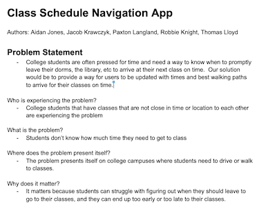
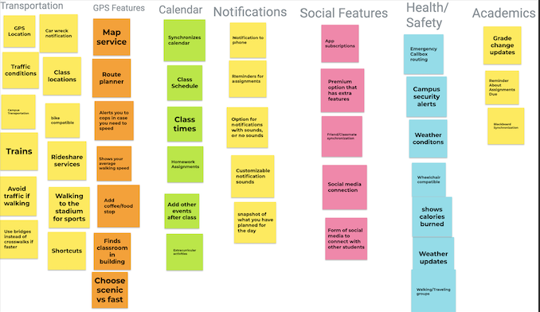
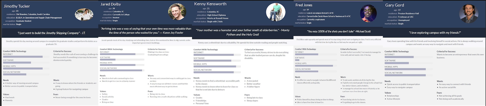

Problem Statement: Class Navigation
College students are often pressed for time and need a way to know when to promptly leave their dorms, the library, etc to arrive at their next class on time. Our solution would be to provide a way for users to be updated with times and best walking paths to arrive for their classes on time.
Affinity Diagram: Class Navigation
Our group brainstormed some ideas that revolved around our idea of an app that helps students sucessfully get to their classes on time, and in an efficient manner.
Personna: 5 Personnas for Class Navigation app.
The personnas of a typical user for the Class Navigation app.
Story Board: Story boards for Class Navigation app.

These story boards are meant to show different types of people that would use our Class Navigation app.
Sketches

A couple of examples of how the Class Navigation app might look.